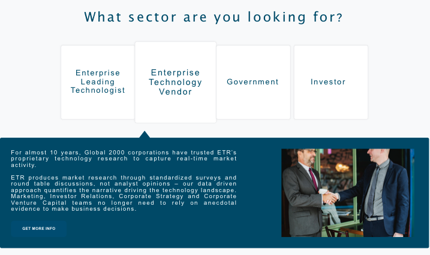

Enterprise Technology Research [ETR], is a primary technology market research firm with an aim to share their insights and analyses with the world through their platform - a public-facing website. This project details out the process of the thoughts and actions that went into creating a landing page for the website.
Project Duration: 1 months

Over 9 years, ETR has aggregated 4 Million+ data points on 350+ public and private vendors and has visibility into roughly $835 Billion of enterprise IT spend by surveying our robust network of 4000 of the most highly, and consistently, engaged enterprise IT professionals on their forward looking spending intentions.The landing page of a website is a standalone page, distinct from all the other pages, yet keeping the entire website connected. If handled correctly, it could be the next step toward a visitor becoming a customer. While the essence of a landing page differs depending on the business/product the website is trying to sell, its significance in this project went further. The website, for which the landing page was to be designed, was being launched as a public facing site for the very first time. Additionally, the core business of the company was targeting an unsaturated market. The landing page was liable for ensuring that all the information is presented to the user in a responsible manner to generate curiosity and garner conversions. If you haven’t already done so, I would encourage you to read my previous case study to get an idea of the project I was working on for the data research firm ETR(Enterprise Technology Research).
Once the high fidelity visual designs for the rest of the website were finalized and the deployment to the development team was successfully completed, I was given the task of designing the landing page for the platform. In my head, this looked like a great opportunity to play with a range of colors, design cool animations, create a minimalistic look with the less, more specific content. It wasn’t too long before I realized how wrong I was.
When you are working for a Data Research firm, you learn that the key value proposition revolves around data and that subsequently increases its significance. This was the first time that ETR was releasing a public facing website. This was the first time that EVERYONE was going to know what the company does exactly. All this responsibility was needed to be fulfilled by the landing page. The landing page was going to be the very first thing that people would see on the website, and was responsible for setting the brand of the company.
The audience for the landing page obviously included the target user base for the product/service that the website was selling. However, the users who would benefit the most from the landing page were the new ones, people who had not originally been clients of the company, did not have a subscription plan on their old website, or a clear idea of what they get when they sign up.
These new users included Investors and Enterprise Leading Technologists like CIOs and IT executives, Enterprise Technology Vendors looking to capture real-time market activity, and the Government IT Departments. The landing page thus had to include information relevant to all these people who belonged to the data research sector. At the same time I had to make sure not to encourage the assumption that all these users would be familiar with the sector jargon.
Once the website was under development, the work that followed was divided up within the team. I was assigned the task to come up with the landing page design. During the course of the entire project, I
Wireframing Tool:
Sketch, Photoshop
Animation Tool:
Adobe After Effects
Prototyping Tool:
InVision
The design process for the landing page began with going back to the website UI. It was essential to use similar colors and elements to ensure that the landing page design looked like a part of the rest of the website. This meant accessing the same library of UI elements that we created for the website. Even though the idea was to design a page that would look like an extension of the brand, the landing page was supposed to serve a distinct function. Keeping this in mind, I decided to add some variations to the palette.
The variations were mainly aimed at making the key components on the landing page pop out a little. When I started designing the landing page, I had this preconception in my mind that the page should be as concise and minimal as possible. Landing Pages have a primary goal to convert traffic into a lead, and so I wanted to optimize it to make it easier for the users to take necessary action. This meant clearly defining the benefits of the product that is being sold, telling the users what they would get, and giving them a CTA button to get it. I designed elements that supported these ideas.
While I was trying to come up with ways to make the content look more appealing while keeping it pertinent, I was given a document with use cases that I had to go through to understand the content that was supposed to live on the landing page. In the process of trying to design a landing page by following the generic principles, I forgot about the data research firm principles. There was a lot of data that they wanted to share with the users. While I did not completely agree with having so much information on the landing page, I discerned that it made more sense for the users to see the actual Models and Charts that they would be getting access to. The target user base for the products ETR was selling was unlike any other ecommerce company. Looking at familiar terms in the research field and knowing exactly what information they’d be getting access to, would encourage user engagement.
This realization took me back to the ideation process. Having the information on the landing page was essential, but I wanted my design to give the users an option to see only what they were interested in. As I read the use cases I got further knowledge of the different kinds on users that could potentially come to the website and I wanted to create an experience that would consider them all.
I broke down the landing page in three different sections -
These were the three pages that would cater to all the questions users had. The landing page already had a side navigation that was consistent for the entire website. Adding these tabs in that navigation could get confusing for the users. And so I decided to have a separate navigation within the landing page.
Some of the landing page design options
This navigation would be the first thing that the users would see. The users could check the option they were interested in, and take the action accordingly. The consistent CTA that lived on all the pages was ‘Start Free Trial’. This aligned with the company’s need to promote the Free Trial so that users would sign up. Additionally, the top search bar already had the Pricing Button, and the left navigation had all the other options. These elements combined to provide a balance in the visual design of the page and also gave the users all the options they could choose from.
The idea behind making the home page scrollable was to not cram all the information in little space, and at the same time also include everything that any type of user would want to know. This was where providing secondary points to the conversion funnel played a pivotal role.
WHY US?
This page was to promote the company. The primary goal was to highlight the key metrics that could stand out from a user’s perspective. I wanted to add animations here to make the numbers pop out more. To convince the development team, I decided to create an animation in Adobe After Effects and realized that I could export the HTML Code for the animation from the software itself. This code was big and needed to be modified, but it helped promote the case for animation. The result was applauded by all.
WHO WE SERVE?
This page was supposed to target the different types of users and how the platform could benefit them based on their roles. The use cases that I read through were supposed to live here. When I started designing for this page, The idea of having an image corresponding to each use case looked like a good idea. The use case names however, made it difficult to find images that relevently corresponded to each of them.

The idea of having background images as opposed to smaller specific images was an option I had been contemplating. Since there were no specific images that could relate directly to the content on display, I decided to take a different approach and use images that would tell more about the company culture. This meant using desk images, images with people, pictures of the office, etc.
Once this was finalized, I had to think of a way to include the content for each of the use cases in one page. There was A LOT of content, and then there were Power BI Models corresponding to the content provided. I wanted to think of a way to give the users the power to view only what they were interested in, instead of having everything cluttered up there. The content of ‘How It Works’ could be populated based on the use case selected. This meant I’d have to connect the two pages.
HOW WE SERVE?
This page essentially consisted of the different types of research deliverables that users would get access to, if they signed up for the service. When I started designing this page, it was just a lot of data and images that looked like an essay no one would ever read. A lot of research went into creating a more interactive and welcoming page.
The more you keep things hidden, the more users want to know about them.
Keeping this notion in mind, I designed a page where the users could see an icon that they’d want to click on to reveal the Chart relevant to that particular list item. These icons would change color on hover, which would make the users WANT to click them. The solution was to have everything on display, and yet have a surprise element. The Power BI Models that appeared when a particular item was selected acted like the surprise element here.
This page was supposed to have pre-populated content based on the tab selected in the previous page (Who We Serve). However, if a user lands directly on this page through the Landing Page navigation, there needed to be a provision for the user to change the use case there itself. For this purpose, a drop-down was introduced in the ‘How We Serve’ page.
After the designs were ready, the content copy was to be put in. Before handing out the designs to the dev team, I had to make sure that the design was positioned well enough to accomodate all the content. The content was shared with me in the form of a google document with 25 pages. I had to decide what all I wanted to use and get it approved further. This meant collaborating with the Marketing Lead and finalizing the relevant reduced copy. The entire process, right from the initial design iterations to the final high-fidelity wireframes, took about 3 weeks time. The complete look with all the design artboards that I iterated over looked something like this.
As mentioned in the previous case study, the website was mainly designed for desktop use but was made responsive to ensure consistent look on mobile(and other devices). While the designs for the rest of the website were mocked up on mobile too, the time constraints did not leave enough time to mock up the landing page on mobile. Hence, I worked closely with the front-end developer responsible for building the landing page to create an intuitive look of the landing page on mobile and other tablet.
If you can notice here, the main navigation of the website gets hidden under the hamburger icon. There was a little resistance towards hiding the navigation too. However, since the design was not mobile specific, the aim was just to design for web and apply generic principles to make it responsive. For the navigation within the landing page though, the design remained consistent in mobile view as well. The practice we followed for mobile view was thus what we call a combo navigation - some of the main navigation links were visible while the others were hidden. This was based on the research report regarding the effects on usability of different kinds of navigation published by the NNGROUP.
Once the website was launched, the analytics synced with the site were monitored closely for the initial few weeks. The landing page usually has defined primary goals.
With reference to the first goal, the metrics suggested that the details were being conveyed effectively. When the user behaviour flow was observed, we noticed that a lot of users, in spite of landing on different pages that the ads were targeted towards, ended up coming back to the landing page. This suggested that they wanted to know more, dig deeper, and get all the relevant information of what the service was about.
Irrespective of the page they landed on, users were inclined to go to the landing page
Even if the first/second interaction was a specific product page, users tended to go back to the landing page which could only be to get detailed information of the company and services they provide
The second goal that the landing page is supposed to accomplish though, was not fulfilled. There had been no conversions on the website. This issue had to be recognized and resolved. I did some analysis as to what could’ve been the problem. A derivation we got from the Retrospective of the ETR+ website case study was that 70-80% of the traffic was accessing the website on mobile. This made me analyze the mobile view of the landing page.
The scrolling time increased in mobile since everything was pushed down, including the CTA Button. The buttons on the landing page navigation were recognized by hovering over which basically changed its color. In mobile, however, there is no hover option and this made it difficult to recognize the buttons.

For the ‘Who We Serve’ page, there was no way to understand the tab which was selected, since nothing was highlighted, and it seemed difficult to map the heading of the use case to the Tools button. The same issue persisted in the ‘How It Works’ page as well. The tab selected was supposed to populate the image within the screen and this could not be understood on mobile.

One other thing that I noticed was that once the site went live, there were very few people going to the Marketplace - which was supposed to be the key selling place of the website. Even though the primary goal was to get as more subscriptions, the new element that the company’s public-facing interface introduced was the flexibility to purchase individual reports from the Marketplace. This was a key concern that a lot of department heads were having.
The landing page did not promote anything other than the Free Trial. There were three CTA Buttons that were placed for conversions, and all three were pointing towards the Free Trial. There was ample opportunity to promote the Marketplace and even the Pricing Page on the Landing Page.
Even though the purpose of getting relevant information to the user was satisfied, there was still a lot of work to be done in order to optimize the landing page to drive conversions. For me, it was an immersive learning experience.
The entire landing page flow
You can checkout the website here!